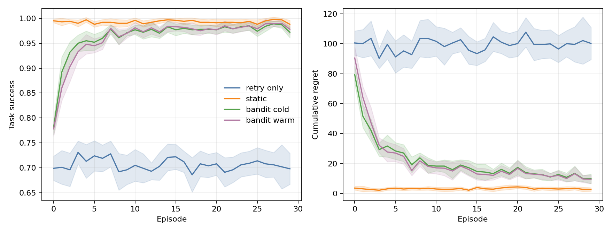
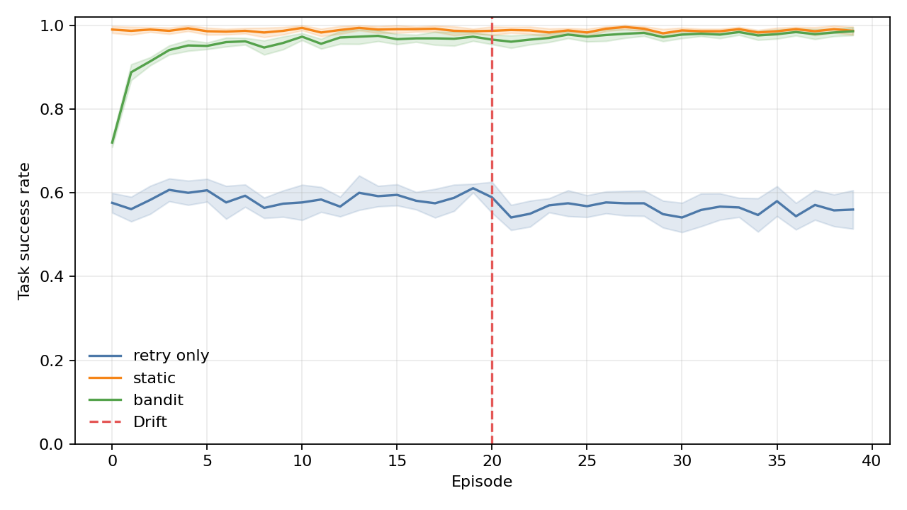

HealAgent
A seeded simulation for learning which recovery action works for each tool failure.
Tool failures need context-aware recovery
Retries are inexpensive when a timeout is transient. The same retry can waste the recovery budget when a tool is persistently unavailable or its response is stale.
A fixed failure-class mapping cannot learn from the outcomes it produces.
Paper supplies the control-loop framing
Babu and Agrawal (2026) describe a bounded, verification-guided orchestrator with fault injection and trace-based evaluation. HealAgent reimplements the simulation from its own specification; it does not use the paper's reference artifact.
Reference: Babu & Agrawal, arXiv:2606.01416. Paper results are not project results.What this project adds
Inherited design elements
Failure-aware orchestration, observable signals, bounded recovery, verification, and controlled fault-injection evaluation.
New implementation contributions
SQLite recovery ledger, seeded contextual bandits, per-tool recovery profiles, deterministic drift, and a reproducible synthetic e-commerce benchmark.
The fixed mapping is a local baseline. The paper's benchmark sizes and reported success rates are not transferred to this project.
Outcomes feed a per-signature ledger
Each recovery attempt records a signature, chosen action, observed success, cost proxy, simulated latency, and reward. The next matching event can use those historical outcomes.
Learn action value within a feasibility mask
Unsupported actions are masked before selection. A cold ledger learns from outcomes; a warm start can use static-map priors. Discounting supports changing profiles.
A bandit is not guaranteed to beat a well-matched fixed policy.
Controlled runs isolate the recovery layer
Refresh succeeds where retry-only exhausts its budget
The prior observations are explicit in the demo builder; the selected action is still made by the configured bandit policy under the feasibility mask.
StaticMapping leads on moderate-fault TSR
Ten paired seeds per policy and intensity. The bandit does not beat StaticMapping on the main TSR comparison.
Fifty seeded episodes expose two recovery profiles

The dashboard's separate 50-episode replay alternates shipping timeouts, which converge to substitute, with customer timeouts, which converge to retry.
The bandit regains baseline TSR sooner after configured drift

The dashboard toggle shows a retry success before drift and retry followed by substitute after drift. This is one configured profile change.
The oracle verifier rejects a plausible wrong calculator result
Scripted trace
calculator returns semantic_wrong
verifier signal: verifier_rejection
StaticMapping selects repair
verifier outcome: pass
The phase 5 table also varies algorithm, start state, masks, reward cost, and ledger discount. The SFR result measures simulator behavior, not production verification quality.
Evidence is controlled and narrow
Ledger-based recovery is promising under drift, not dominant overall
The current evidence supports continued testing of per-signature learning where fault profiles change. It does not support replacing a strong fixed policy across all conditions.
Next experiments
Increase task diversity, test unseen tool profiles, evaluate noisy verifier signals, and compare confidence-aware bandits under held-out drift events.
Babu, R. S., & Agrawal, A. (2026). Self-Healing Agentic Orchestrators for Reliable Tool-Augmented Large Language Model Systems. arXiv:2606.01416. https://doi.org/10.48550/arXiv.2606.01416